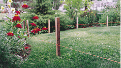
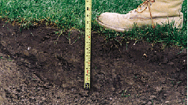
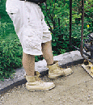
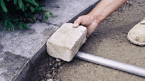
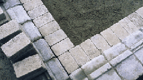
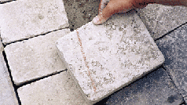
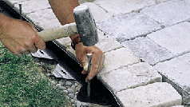
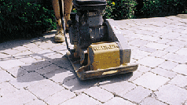
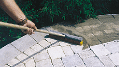

Shoreline Landcare's installation process
Basics for building patios, walkways, and driveways
The
installation of Unilock products requires creativity, experience and
attention to detail. The beauty of the product is often judged by the
quality of the installation. Shoreline Landcare uses Unilock brick
pavers in all our hardscape designs. We have the right tools and team
to build you a long lasting outdoor living space that adds value to
your home. We have a step-by-step system to install pavers and wall
units.
Step 1: Planning
We
design a 2D or 3D plan showing measurements and grade elevations. We
then calculate the amount of materials and estimate the cost of your
project. We deliver color samples of all pavers that will be used in
the project plus any accessories.
Step 2: Preparation

We mark locations of the patio, walkway, or driveway and call J.U.L.I.E to locate and mark all utilities.
Step 3: Excavation

We excavate 12” deep to install pavers. Other depths are needed
for stone pillars and other heavy structures.
Step 4: Base

We then fill the area with gravel and compact every 2” with a
Rammer Compactor for a solid base. We grade the base as closely as
possible to the final contour of the finished job. All installations
slope away from the house for drainage purposes. The gravel will be
3" below finished height.
Step 5: Screeding

Pavers are laid on a 1" bed of coarse sand, placed directly on the
compacted base. Guides are setup so that your pavers are ¾"
above the finished level to allow for compacting. We level the sand
by pulling a 2x4 along the guides. Once we have completed the area,
we remove the guides, and fill in the grooves.
Step 6: Laying the Pavers

We place the pavers directly on the screeded bed of sand. We start
laying along the longest straight side keeping lines straight using
string lines. This will minimize the cutting required. We make sure
the lines of your pavers are square, 90° to each other, to fit
properly.
Step 7: Cutting

We may need to cut pavers that don't fit along edges or around objects.
We mark the pavers and cut with either a guillotine cutter or masonry
saw.
Step 8: Edging

Edge restraints are a critical element to the durability of a paver
installation. They prevent the pavers from moving and shifting over
time. We space each nail 1’.
Step 9: Compacting

After the installation is complete, including edge restraints, the pavers
will be swept clean and then compacted with a plate compactor. This
helps settle the pavers into the bedding sand and creates a flat
surface. (For patterns such as circles, we put some jointing sand in
first to stabilize the smaller pieces.) We do a minimum of three
passes with the compactor going in different directions.
Step 10: Finishing

The last step is to sweep specially graded Unilock® Polymeric
Jointing Sand into the joints between the pavers. This locks the
pavers together creating a very durable surface and protects the
project from weeds, insects and erosion.
Call Shoreline Landcare at 630-551-5224 for a free estimate or click
here
|